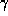
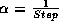
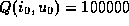

今回は、Q-learning のパラメータ値を以下のように定めた。 Q-function の初期値および報酬を大きくとっているのは、 浮動小数点計算を避けることで処理を高速にするためである。





![[i18n checked]](i18n-ok.gif) Q-learning により学習を行う Tic-Tac-Toe プログラム
Q-learning により学習を行う Tic-Tac-Toe プログラム